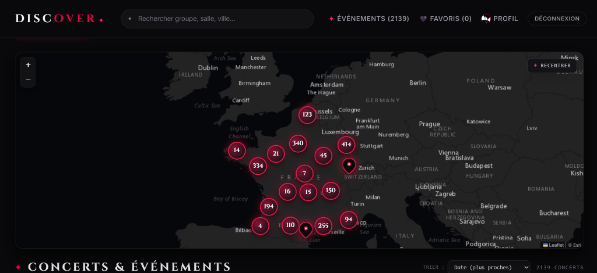

Concerts & Musique

✦ DISCOVER — Concerts & Live Music
Plateforme web interactive pour explorer, géolocaliser et suivre en direct les concerts en France. Synchronisation Ticketmaster en temps réel, carte Leaflet interactive avec clustering et favoris persistants sur MongoDB.
Voir le site